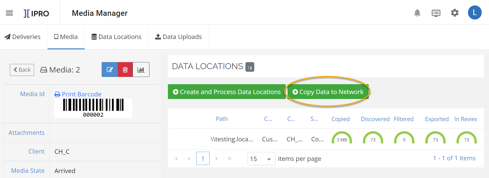

icon.
icon. Click Copy Data to Network.

If you are not already connected to a Copy
Station, you will need to connect the media received in your shipment
to an available Copy Station. See
-
In the Data Status pane, choose a Copy Station. The available drives display to the right.
-
Click Connect on the selected drive.
|
|
Important: If the serial number that is read from the connected drive differs from the data entered in when registering the media, a warning message displays. |

Complete Steps a - b (a green checkmark displays next to each step when it is complete.):
-
Select Paths
-
From the Select Case drop-down list, select the case into which you want to process the data.
-
Select the connected drive to scan.
-
Click Next.
-
-
Enter Destination Path
-
Enter the Network Path.
-
Click Process.
-